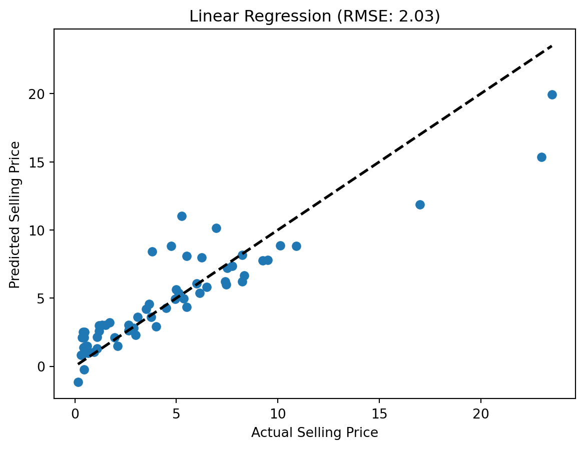
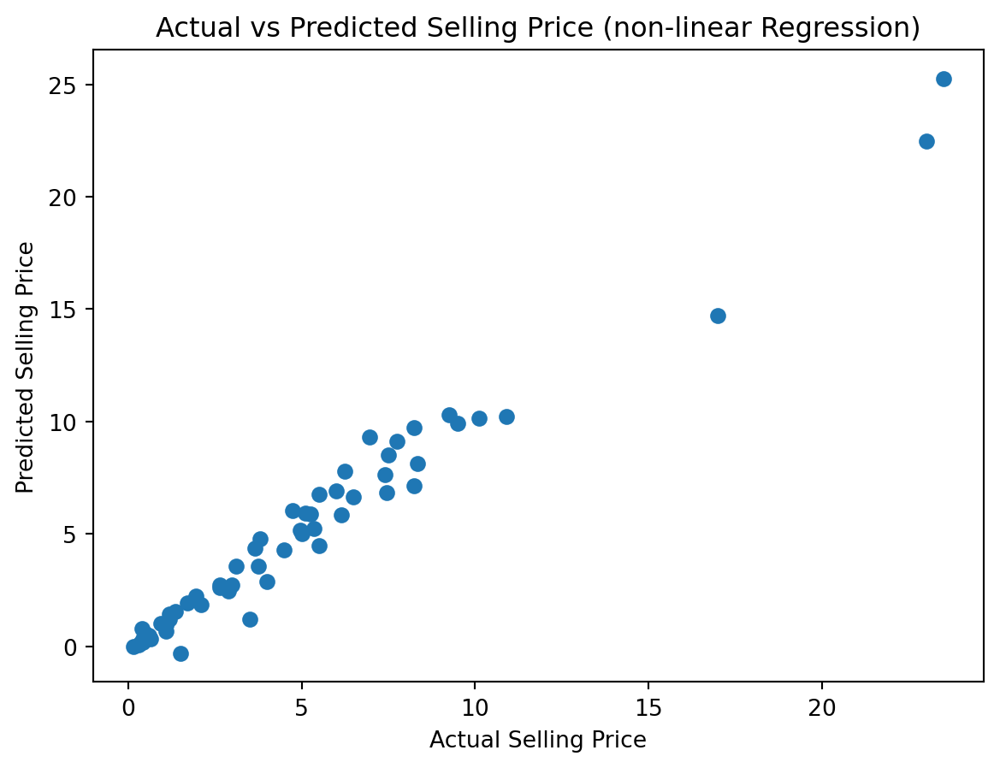

This blog-post provides an overview and comparison of linear and non-linear regression techniques, common methods used in predictive modeling.
Linear Regression
Linear regression is a statistical method used for modeling the relationship between a dependent variable and one or more independent variables. It assumes a linear relationship between the input variables and the output.
Algorithm Explanation
Model Representation: Linear regression represents the relationship between the dependent variable Y and the independent variable(s) X using a linear equation: Y = b0 + b1*X + ε, where b0 is the intercept, b1 is the coefficient, and ε is the error term.
Objective: The model aims to find the best-fitting line that minimizes the sum of the squared differences between actual and predicted values (Ordinary Least Squares method).
Model Evaluation: Common evaluation metrics include R-squared, Mean Squared Error (MSE), and Root Mean Squared Error (RMSE). These metrics assess how well the model fits the data.
Use Cases
Linear regression is suitable when the relationship between variables is linear. It’s commonly used in scenarios such as predicting sales based on advertising expenditure, predicting housing prices based on area, etc.
Non-linear Regression
Non-linear regression is used when the relationship between the dependent and independent variables is not linear. It models complex relationships by fitting a curve instead of a straight line.
Algorithm Explanation
Model Representation: Non-linear regression uses non-linear equations to represent the relationship between variables. Examples include quadratic, exponential, logarithmic, and sigmoid functions.
Objective: Similar to linear regression, the aim is to minimize the difference between actual and predicted values but using non-linear functions to fit the data.
Model Evaluation: Evaluation metrics remain similar to linear regression, with R-squared, MSE, and RMSE being commonly used.
Use Cases
Non-linear regression is applicable when the relationship between variables is better represented by curves or other non-linear functions. Examples include modeling population growth, predicting disease spread, etc.
Conclusion
Linear regression is suitable for simpler relationships between variables, assuming linearity, while non-linear regression is more flexible, capturing complex patterns in the data. The choice between linear and non-linear regression depends on the nature of the data and the underlying relationship between variables.
import pandas as pdimport matplotlib.pyplot as pltfrom sklearn.model_selection import train_test_splitfrom sklearn.linear_model import LinearRegressionfrom sklearn.metrics import mean_squared_error# Load the datasetfile_path ='car data.csv'data = pd.read_csv(file_path)# Selecting independent and dependent variablesX = data[['Year', 'Present_Price', 'Kms_Driven', 'Owner']] # Featuresy = data['Selling_Price'] # Target variable# Splitting the dataset into training and testing setsX_train, X_test, y_train, y_test = train_test_split(X, y, test_size=0.2, random_state=42)# Linear Regressionlinear_reg = LinearRegression()linear_reg.fit(X_train, y_train)# Prediction on the test sety_pred = linear_reg.predict(X_test)# Calculating RMSE (Root Mean Squared Error)rmse = mean_squared_error(y_test, y_pred, squared=False)print('RMSE:', rmse)# Visualizationplt.scatter(y_test, y_pred)plt.plot([min(y_test), max(y_test)], [min(y_test), max(y_test)], 'k--', lw=2)plt.xlabel('Actual Selling Price')plt.ylabel('Predicted Selling Price')plt.title('Linear Regression (RMSE: {:.2f})'.format(rmse))plt.show()
RMSE: 2.0304088376313625

Code Explanation
Importing Libraries
The code begins by importing necessary libraries: Pandas, NumPy, train_test_split, LinearRegression from scikit-learn, and matplotlib.pyplot.
Loading and Preparing Data
Loads the dataset ‘car data.csv’ into a Pandas DataFrame named data.
Selects independent variables (‘Year’, ‘Present_Price’, ‘Kms_Driven’) as X and the dependent variable (‘Selling_Price’) as y.
Splits the dataset into training and testing sets using train_test_split, allocating 80% for training and 20% for testing.
Building the Linear Regression Model
Initializes a Linear Regression model using LinearRegression() from scikit-learn.
Fits the model on the training data (X_train, y_train), learning the coefficients for the linear equation.
Model Evaluation
Uses the trained model to make predictions on the test data (X_test).
Generates a scatter plot comparing predicted selling prices with actual selling prices to visualize the model’s performance.
Conclusion
The linear regression model successfully predicts selling prices of cars based on features like year, present price, and kilometers driven. The scatter plot visually represents the alignment between predicted and actual selling prices, allowing assessment of the model’s performance.
import pandas as pdimport numpy as npfrom sklearn.model_selection import train_test_splitfrom sklearn.preprocessing import LabelEncoderfrom sklearn.preprocessing import PolynomialFeaturesfrom sklearn.linear_model import LinearRegressionfrom sklearn.metrics import mean_squared_errorimport matplotlib.pyplot as plt# Load the datasetfile_path ='car data.csv'data = pd.read_csv(file_path)# Select relevant columns for analysiscolumns_for_regression = ['Year', 'Present_Price', 'Kms_Driven', 'Fuel_Type', 'Seller_Type', 'Transmission', 'Selling_Price']data = data[columns_for_regression]# Encoding categorical variableslabel_encoder = LabelEncoder()data['Fuel_Type'] = label_encoder.fit_transform(data['Fuel_Type'])data['Seller_Type'] = label_encoder.fit_transform(data['Seller_Type'])data['Transmission'] = label_encoder.fit_transform(data['Transmission'])# Independent variables (X) and dependent variable (y)X = data.drop('Selling_Price', axis=1)y = data['Selling_Price']# Split the data into training and testing setsX_train, X_test, y_train, y_test = train_test_split(X, y, test_size=0.2, random_state=42)# Polynomial regressionpoly = PolynomialFeatures(degree=2) # Choose the degree of the polynomialX_train_poly = poly.fit_transform(X_train)X_test_poly = poly.transform(X_test)# Fitting the polynomial regression modelmodel = LinearRegression()model.fit(X_train_poly, y_train)# Predictions on the test sety_pred = model.predict(X_test_poly)# Evaluation - Mean Squared Error (MSE)mse = mean_squared_error(y_test, y_pred)print(f"Mean Squared Error: {mse}")# Visualization - Actual vs Predictedplt.scatter(y_test, y_pred)plt.xlabel('Actual Selling Price')plt.ylabel('Predicted Selling Price')plt.title('Actual vs Predicted Selling Price (non-linear Regression)')plt.show()
Mean Squared Error: 0.7269897857594595

Polynomial Regression for Predicting Car Selling Price
This code snippet demonstrates polynomial regression to predict the selling price of cars based on various features.
Code Explanation
The code performs the following steps:
Data Loading and Preprocessing
Loads the ‘car data.csv’ dataset and selects relevant columns (‘Year’, ‘Present_Price’, ‘Kms_Driven’, ‘Fuel_Type’, ‘Seller_Type’, ‘Transmission’, ‘Selling_Price’).
Encodes categorical variables (‘Fuel_Type’, ‘Seller_Type’, ‘Transmission’) using LabelEncoder to convert them into numerical format for analysis.
Data Splitting
Splits the dataset into independent variables (X) and the dependent variable (y) representing features and the target variable (‘Selling_Price’) respectively.
Further splits the data into training and testing sets using train_test_split.
Polynomial Regression
Utilizes PolynomialFeatures from scikit-learn to generate polynomial and interaction features. The degree of the polynomial is set to 2 for demonstration purposes.
Transforms the features into non-linear form and fits the Linear Regression model.
Model Fitting and Prediction
Fits the non-linear regression model using the training data.
Makes predictions on the test set using the trained model.
Evaluation and Visualization
Calculates the Mean Squared Error (MSE) to evaluate the model’s performance.
Generates a scatter plot to visualize the relationship between the actual and predicted selling prices.
Conclusion
This code showcases how non-linear regression can be used to predict car selling prices based on various features. Adjusting the degree of the polynomial or exploring different non-linear regression models can potentially capture more complex relationships in the data.